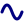

1a. OSCmakes the tone

Wave
Level
100%
Octave
0
Detune
0 ¢
LFO Amt
0 ¢
LFO In
1b. NOISEmakes hiss
Color
Level
0%
2. LO-FIcrunchy bits
Bits
16 bit
Rate
48.0 kHz
3. FILTERshapes the tone
Type
Cutoff
829 Hz
Resonance
0.5 Q
Gain
-30 dB
Env Amt
0 Hz
LFO Amt
0 ¢
LFO In
4. AMP ENVshapes volume
Attack
0.02s
Decay
0.10s
Sustain
0.70
Release
0.20s
5. DELAYadds echoes
Level
25%
Time
350 ms
Feedback
35%
LFO Amt
0.00 ms
LFO In
6. MASTERto speakers
Volume
-6 dB
Pan Amt
0.00
Pan LFO In
LFO 1modulator · patch it with a LFO 1 jack
Wave
Rate
5.00 Hz
Polarity
Pick LFO 1 on any LFO In jack above to route it there.
LFO 2modulator · patch it with a LFO 2 jack
Wave
Rate
5.00 Hz
Polarity
LFO 1 + 2
Tip: play with your computer keyboard too: A W S E D F T G Y H U J K